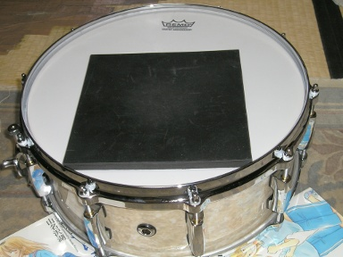

昨夜お嫁にきた Pearl の Masters Custom MCX1455S/C を、午前中に仮チューニングしました。
バターサイドのヘッドのチューニングで済むかと思っていたのですが、なぜかチューニングボルトが 1 本だけ指で回せる状態だったので不審に思い、ヘッドを全て外していろいろ確認することにしました。
まずはラグを止めているネジのチェックをします。案の定ネジが全てゆるんでいます。すべて締めてやります。ひょとしてと思い、ストレイナーを固定するネジをチェックすると、こちらも若干緩んでいます。これも締めてやります。そしてバターサイドのヘッドを仮つけします。
またスネアサイドのヘッドもゆるゆるだったので、こちらを先にチューニングをし直しました。最初にスネアの鳴りがおかしかったのは、どうやらスネアサイドのヘッドがゆるゆるだったためのようです。
そしてバターサイドのヘッドのチューニングを済ませると、スタイルだけでなく音もおしゃれさんになりました。めでたしめでたしです。今日のところはあくまで仮チューニングですけど。本チューニングは後日スタンドにセットしてからです。
ひとつだけ気になっていることがあります。
私がチューニングする前の状態で、店舗にならんでいたのか、それともそうでないのかということです。
もしあの状態で店舗にならんでいたのなら店頭での試奏は意味がありません。チューニングされておらず、ラグやストレイナーの取り付けネジが緩んですらいるのですから。
配送にあたってテンションをゆるめておいたと好意的に解釈したいところですが、ラグやストレイナーのネジの緩みはどうなんでしょう。適当にとめただけのようにしか思えないところです。この状態で店頭で試奏を勧められても「何かがおかしい」ということがわかるだけです。
みなさん Pearl Masters Custom MCX1455S/C ですが、どうせなら家でも鳴らしたいですよね。私は鳴らしたい派です。
それで、「お家でドラミング」を目指してこんなことを試してみました。
練習用ゴムパッド登場。
結果。
あきませんわ。
シェルとスネアサイドのヘッドがあるために共鳴して、ゴムパッドオンリーで使ってたときより、かなりでかい音がします。当然といえば当然の結果です。逆にこの子はよく鳴ってくれるいい子であることが証明されました。
ここは素直に白井式を導入すべきなんでしょうね。下の動画はシンバルの消音の解説ですが、スネアに注目です。
消音したらその楽器を鳴らしていることにならないなどと、まっとうな指摘をしてはいけません。ちゃんとした楽器を持ってることが大事なんです！！きっとたぶん……